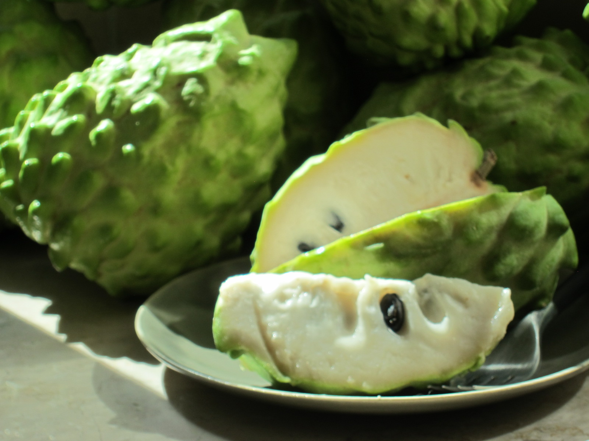

鳳梨釋迦
又稱「旺來釋迦」。表面鱗目為尖形，須以刀子削皮切塊。籽少，口感Q彈扎實，甜度可達25度，同時含有酸甜香味，食用時有滿滿溫暖安定感，甜而不膩。產季在11月至隔年4月。
釋迦
中文名詞
[ㄕˋ ㄐㄧㄚ ｜ shì jiā]
一種外型如佛頭，口感如冰淇淋的香甜水果。盛產於台東，營養價值極高。
產季為每年7月至隔年4月。果紋深，表面凸起的鱗目越大，代表果肉越厚實。具有在地原生種的獨特土鮮味，口感綿密，果實粒粒分明。冰鎮後更具有冰淇淋的滑順滋味。
大目釋迦

釋迦的益處
1. 含豐富維生素C，抗氧化又抗老化。2. 富含膠原蛋白，有助皮膚保健。3. 絕佳鈣來源，預防骨質疏鬆。4. 有利癌症預防。5. 富含礦物質鉀，有利心血管保健。6. 提供鐵質，有助貧血患者恢復。7. 含大量維生素，養肝護肝好選擇。8. 含大量膳食纖維，改善腸胃功能。9. 具碳水化合物，有效安定心神，減少失眠。MUSTKNOW
淺色的夏果
夏季釋迦多呈白黃色，而非一般既定印象的翠綠色。這是因為夏天日照時間較長，以致顏色有所不同。然而外表的顏色完全不會影響釋迦本身的香甜口感
食用指南
保存｜食用 Do & Don't
置於通風處使釋迦順暢呼吸
輕觸表皮，軟化則熟度足夠
冷藏熟成果實，嚐獲猶如冰淇淋般香甜軟綿的絕佳口感。
搭配紅茶食用，風味更加清香。
未熟即置入密閉容器或冰箱